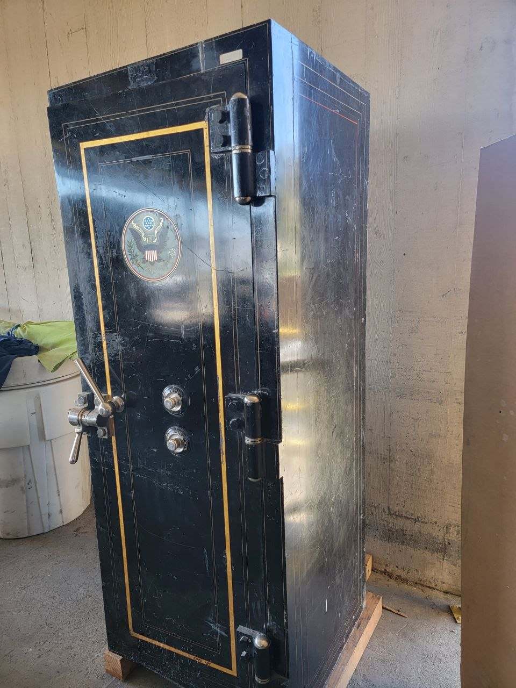
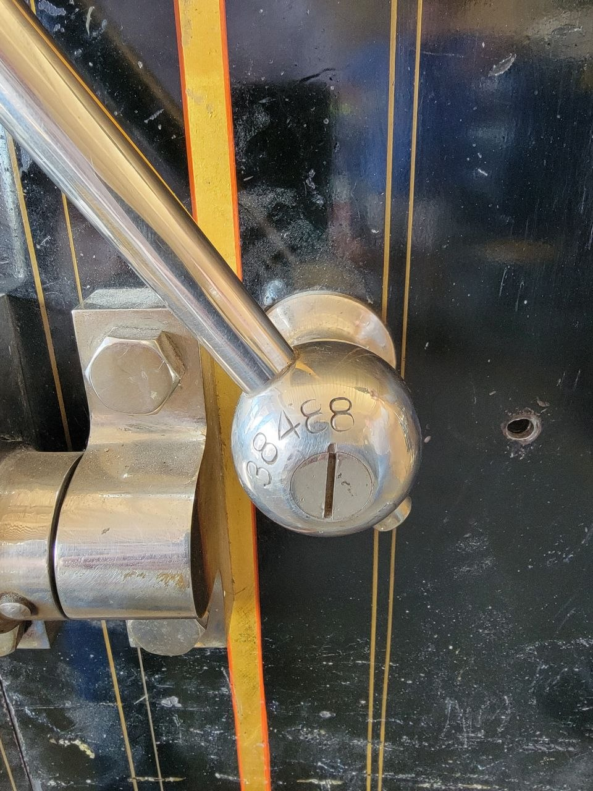
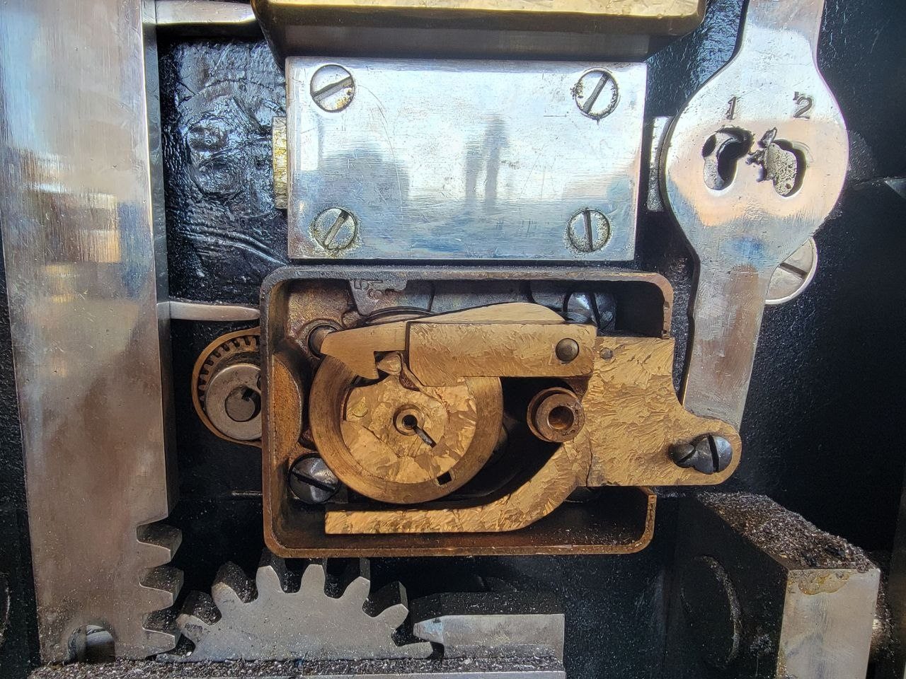
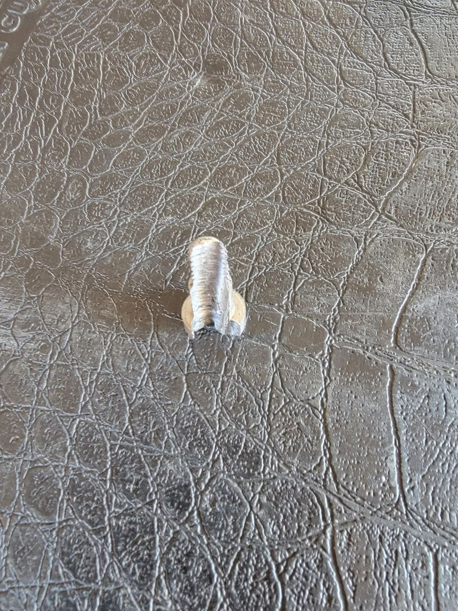
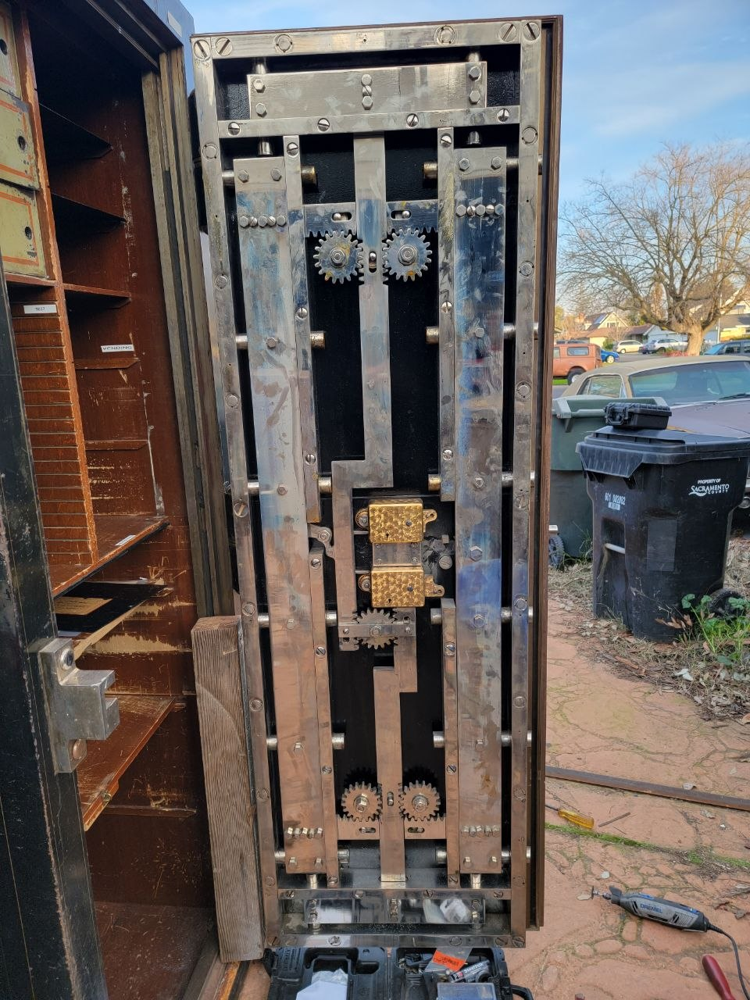

The Impossible Shot — Opening a GSA Porta-A-Vault With One 1/4" Hole
This is a GSA Porta-A-Vault, built for the United States Postal Service. It's a certified government container with dual custody locks — meaning two people with two different combinations are required to open it. One person alone cannot access the contents.
These containers are built tough. The dual custody system uses a settings screw that has to line up perfectly for both locks to release. Miss the screw by a fraction of an inch and you've got a safe that won't open.
I hit it with one 1/4" hole.





The vault, the surgical hole, the settings screw exposed, the close-up, and the inside of the door showing the mechanism.
Most guys look at a GSA container and guess. They drill wide, miss the screw, and end up chasing the lock through the door — leaving a mess of holes and a safe that's compromised.
I know these containers. I've been GSA certified across multiple classifications (X-07, X-08, X-09, X-10) for years. The geometry of the dual custody system, the position of the settings screw relative to the dial — I know it like most people know their own garage.
That's what certification and experience look like. One hole, exactly where it belongs. The screw sits exposed through the 1/4" opening. The vault opens. The contents are secure. And the container goes back into service with minimal repair.
What's a Dual Custody System?
Dual custody means two people, each with their own combination, must be present to open the container. A settings screw inside coordinates the two locks so they release simultaneously. That screw is the critical point — if you don't know exactly where it is relative to the dial and the lock body, you're drilling blind.
I knew exactly where it was. The hole proves it.
This isn't bragging. This is showing the difference between a certified government safe technician and someone who thinks "a safe is a safe." GSA containers are a different world. If you don't have the certs and the experience, stay away from them.
GSA-certified safe service in Sacramento and beyond.
GSA X-07, X-08, X-09, X-10 Certified • Preferred Tech for Liberty, Fort Knox, Stealth, Superior & National • CA LCO 4160
Pricing at frantzlocksmithservice.com/pricing